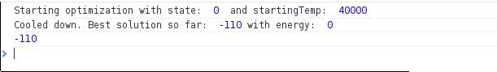

Simulated annealing for complete dummies[like me]
What is the way of understanding some complex thing. It is to try to find the easiest possible example of using it. So, we will use simulated annealing for working out simple equasion. Here it is:
(x+123)*(x-47)*(x+19)*(x-96) = 0
Our task is to find at least one root of this equasion.
Step one. Define API. It will work as interface between any problem, and algorithm
Here it is.
```interface IProblem
**energy** is a function which will give *rating* to our state. And it looks like this:
```function(x:number):number{
return Math.abs((110+x)*(213+x)*(245+x)*(143+x))
}
Several notes:
- energy function must be positive.
- For simplicity sake we use the simpliest format number of data representation.
Second one is neighbour function. It takes state,and derives state with similar energy. The first thing that comes to mind is just to use -1 +1 array. Like this:
return data + _.sample([-1,1])
},
_.sample function takes random element from array. It is from lodash.
Following params are algorithm constants. People suggest to change them empirically to find what fits best for your problem
stopTemp:number
decreaseRate:number
Formula in function ifChange usually stays unchanged on every problem. "This formula was superficially justified by analogy with the transitions of a physical system" says wiki. Pseudocode:
#Acceptance probability
def ifChange(energy:number,newEnergy:number,temperature:number):boolean
#This solution is better. Use it
if newEnergy<energy
return true
#This solution is worse. Determine if we use it by Acceptance_probabilities described from above
random:number = Math.random()
probability:number = Math.pow(Math.E,((energy-newEnergy)/temperature))
return probability>=random
#annealing
currentState = someRandomState
bestState = currentState
while currentTemperature > minimumTemperature:
newState = neighbour(currentState)
# determine if Algorithm should jump to another state
if ifChange(energy(currentState),energy(newState),currentTemperature)
currentState = newState
# keep best solution
if energy(currentState) < energy(bestState)
bestState = currentState
decreaseTemperature()
So. Here is an implementation of that algorithm in Typescript:
function ifChange(energy:number,newEnergy:number,temperature:number):boolean{
// This solution is better. Use it
if (newEnergy<energy){
return true
}
// Choose if we are to use worse solution or not
var random:number = Math.random()
var probability:number = Math.pow(Math.E,((energy-newEnergy)/temperature))
return probability>=random
}
export function Solution<DataFrame>(data:IProblem<DataFrame>){
var state = data.initState
var bestState = data.initState
var nowTemp = data.startingTemp
console.log("Starting optimization with state: ",state,
" and startingTemp: ",data.startingTemp)
while(nowTemp>data.stopTemp){
var newRandomState = data.neighbour(state)
if(ifChange(data.energy(state),data.energy(newRandomState),nowTemp)){
state = newRandomState
}
nowTemp= nowTemp * (1-data.decreaseRate)
// Keep track of the best solution found
if (data.energy(state) < data.energy(bestState)) {
bestState = state
}
}
console.log("Cooled down. Best solution so far: ",bestState,
"with energy: ",data.energy(bestState))
return bestState
}
And here is a definition of our problem in terms of defined architecture:
module SampleAnnealingSolution {
var quadratic:Annealing.IProblem<number> = {
energy:function(x:number):number{
return Math.abs((110+x)*(213+x)*(245+x)*(143+x))
},
neighbour:function(data:number){
return data + _.sample([-3,-2,-1,1,2,3])
},
startingTemp:40000,
stopTemp:0.4,
decreaseRate:0.03,
initState:0
}
console.log(Annealing.Solution(quadratic))
}
- You can play with constants to find what suits your problem best.
This algorithm will find only one root. You can use it to find all roots of arbitrary equation by running algorithm consequently.
Source code can be found here
Running code from above will give you something like this in dev. console: 